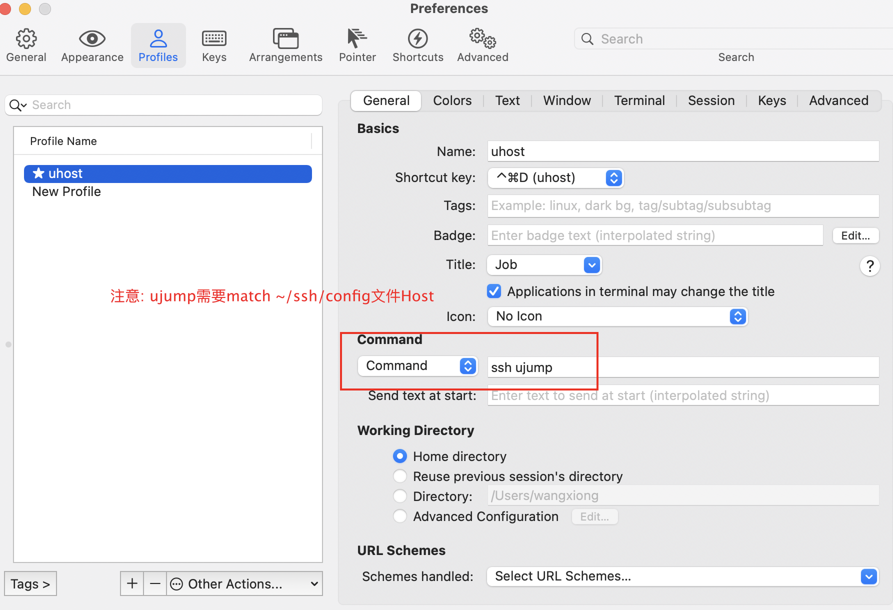

iterm2 跳板机避免重复验证
比如登陆公司跳板机每次需要输入验证码，对开发很不友好，可以在本地环境 ~/.ssh/config 文件中加上下面配置
1
2
3
4
5
6
7
8
9
| Host ujump
HostName jump1.xxxx.com
Port 22
User lee
IdentityFile ~/.ssh/id_rsa
ServerAliveInterval 300
ControlMaster auto
ControlPath ~/.ssh/master-%r@%h:%p
StrictHostKeyChecking no
|
这样就可以免验证登陆，但在使用时还是不友好，因为每次新打开的窗口仍然需要输入ssh xxxx，Mac 可以在iTerm2中进行配置new profile

ssh 免密登陆
本地
cat ~/.ssh/id_rsa.pub
1
| ssh-rsa AAAAB3NzaC1yc2EAAAADAQABAAABgQCkHYTZDNfsSbanDwlJODoGAx9py6sQpdf/bfR
|
服务器
将上一步的key 放入 ~/.ssh/authorized_keys
屏蔽浏览器网络请求
在 F12 调试时很不方便，故屏蔽掉不相关的请求。
1
| -/.*.js|.*.php|.*.png|.*.ico|.*.css|.*.gif/
|
Mac 工具推荐
翻译工具
截屏
剪切板（复制多个）
内存、CPU、磁盘占用
Vscode 插件
markdone 预览
1
| Markdown Preview Enhanced
|
git 查看历史提交
yaml自动补全
1
2
| * git: line
* kubernetes、yaml
|
自动生成图
远程开发
html 预览
生成脑图
粘贴图片
坤坤鼓励师